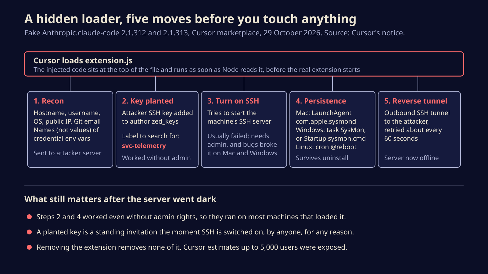

A fake Claude Code build in Cursor's store planted SSH backdoors for 11 hours
For eleven hours on Thursday, Cursor's extension marketplace served a tampered Claude Code build that planted a backdoor key and stayed behind after removal. Here is what it did, why the failed parts still matter, and the five-minute check every Cursor user should run.
If you use Cursor and had the Claude Code extension installed on Thursday, check your SSH keys today. A tampered copy of the extension sat in Cursor's own marketplace from 2:27 am to 1:35 pm Pacific on 29 October, and anyone who picked it up may still be carrying an attacker's key and a set of startup scripts that outlived the extension itself.
Cursor says the build was not made by Anthropic, that the official Claude Code distribution is clean, and that at most 5,000 users were exposed. It has pulled the package, taken its whole marketplace offline for an audit, rotated its access keys and had the attacker's server shut down. That last step blunts the immediate danger. It does not undo what landed on disk.
How a trusted name became the delivery truck
Cursor is a fork of Microsoft's VS Code, and since it cannot use Microsoft's store it runs its own extension marketplace. That is where the poisoned package appeared, listed under the publisher name Anthropic.claude-code with version numbers that looked like the next routine updates. Cursor's notice, revised on Friday, names 2.1.312 and 2.1.313 for Windows and macOS. Early reports mentioned only 2.1.313.
The attackers did not rewrite the extension. They prepended a block of JavaScript to the top of its main file, extension.js, and left the rest alone, so the extension still did its normal job. The extra code ran the moment the editor loaded the file, before the extension's own startup routine and without the user opening a chat or typing a thing.
How someone got a package published under Anthropic's name is the question nobody has answered. Cursor has not said, and neither outlet that covered the story got an explanation from Cursor or Anthropic. There was also a short dispute over where else the build spread. Phorion, the macOS security firm that analysed the payload, first reported seeing it on Open VSX, the open registry many VS Code forks draw from. Cursor later said its marketplace was the only distribution point, and Ax Sharma of Manifold Security backed that account. Treat Cursor as confirmed and Open VSX as unproven.
What the loader did on your machine
The figure below follows the five steps in order. In plain terms: it phoned home with a profile of the machine, planted a door key, tried and mostly failed to open the door, set itself up to keep trying, and kept dialling out.

The reconnaissance covered the hostname, username, operating system, home and working directories, Git email address and public IP. It also listed the names of credential-style environment variables, such as the ones AWS and Google Cloud use, though not their values. Nothing in the script stole secrets directly. A list of which secrets live on a machine is a shopping list, though, and BleepingComputer suggests the plan was to come back by hand.
The key went into the user's authorized_keys file, the list of keys SSH accepts as proof of identity, labelled svc-telemetry to look like boring plumbing. Turning on the SSH server needs administrator rights, and here the malware tripped over itself. On macOS it checked the Remote Login setting without privileges, got an error instead of the word "Off", and gave up. On Windows it tried to start OpenSSH through a Unix shell that Windows does not ship.
A backdoor that fails to open the door has still left the key under the mat.
That is why the failures are cold comfort. Phorion's warning, relayed by Help Net Security, is simple: if Remote Login is already on, or anyone turns it on later for an unrelated reason, the planted key works. Developers switch SSH on all the time.
The five-minute check
Uninstalling the extension does not remove any of this. Do these steps on any machine that ran Cursor with Claude Code installed on 29 October.
- Look for the key. On macOS or Linux, run
grep -n svc-telemetry ~/.ssh/authorized_keys. On Windows, runfindstr svc-telemetry %USERPROFILE%\.ssh\authorized_keys. Any match means the payload ran. - Look for the startup hooks. On macOS, a LaunchAgent named
com.apple.sysmond. On Windows, a scheduled task calledSysMon(schtasks /query /tn SysMon) or asysmon.cmdin your Startup folder. On Linux, an@rebootline incrontab -l. Cursor also lists dropped files:.smtand.smtkin~/.configon macOS and Linux,smt.cmdandsmtkin a.configfolder under your user profile on Windows. - If you find either, treat the machine as compromised. Disconnect it, then delete the key line, the startup entries and the dropped files. Cursor's notice has cleanup scripts for macOS and Windows; read them before you run them, as you should with any script.
- Check your SSH logs for logins with that key, which would mean someone actually got in.
- From a different, trusted computer, rotate the credentials the affected machine could reach: cloud keys, Git tokens, API keys and browser sessions. If you cannot be sure the machine is clean, rebuild it.
If you find nothing, update Claude Code to the current release from Cursor's rebuilt marketplace and carry on.
The editor is now the soft target
Coding tools have quietly become some of the most privileged software on a developer's laptop. They hold repository access, cloud credentials and, increasingly, agents that run commands on your behalf. Their extension stores were built for convenience, and the forks that cannot use Microsoft's store each run their own, with their own publishing controls and their own gaps. Attackers have noticed. Until marketplaces can prove a package came from the publisher it names, the practical defence is dull and effective: pin the extensions you rely on, turn off silent auto-updates for the ones with deep access, and know what your authorized_keys file is supposed to contain.
Sources
Written with AI for Bade's Mod Shop. Facts are checked against the sources above on the day of publishing; if one is wrong, open an issue.